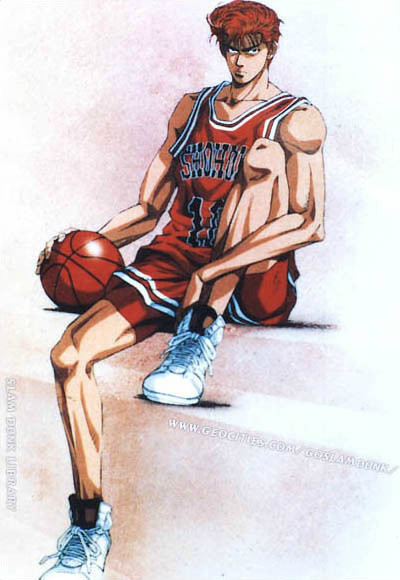

원래 이노우에 타케히코가 슬램덩크 연재 전 단편으로 올렸던 빨강이 좋아라는 작품에서 부터 등장한다. 이름도 똑같고 설정도 똑같다. 다만 빨강이 좋아는 농구만화는 아니고 쑥맥인 강백호가 여자에게 맨날 차이는[12] 괴짜 건달소년의 학원폭력물이다.[13] 여전히 백호군단도 똑같이 등장한다. 작가가 이 캐릭터를 지우기 아까웠는지 슬램덩크의 주인공으로 등장시킨다. 그리고 역시 데뷔전 단편 카에데 퍼플이란 작품에서 서태웅(루카와 카에데)을 가지고 와서 슬램덩크에 투입시킨다.
무시무시한 피지컬과 운동능력을 바탕으로 진짜 잘 싸운다. 게다가 끈기나 체력 같은 부가 조건들도 뛰어나다. 실제로 싸움실력이 엄청나서 중학생 때 홀로 고등학생 4명과 정면에서 싸워 다들 피떡으로 만들어놓기도 했다. 센스도 좋아서 채치수에게 당했던 목 조르기 기술을 이튿날 실전에 써먹기도 했다. 물론 상대가 유도부 주장인지라 소용없었다.